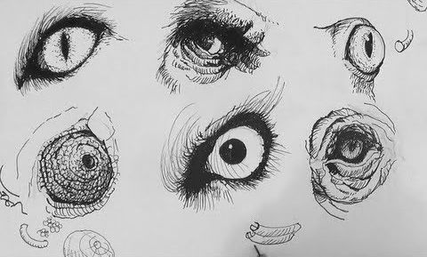

Fatos sobre o Stomatopoda.
Informacoes gerais

| Nome Cientifico | Odontodactylus scyllarus |
|---|---|
| Reino | Animalia |
| Filo | Arthropoda |
| Subfilo | Crustacea |
| Classe | Malacostraca |
| Subclasse | Hoplocarida |
| Ordem | Stomatopoda |
Olhos poderosos
Este animal possui olhos poderosissimos, podendo formar as cores a partir de 16 cores diferentes.
Soco poderoso
Este animal possui um soco de 80km/h.